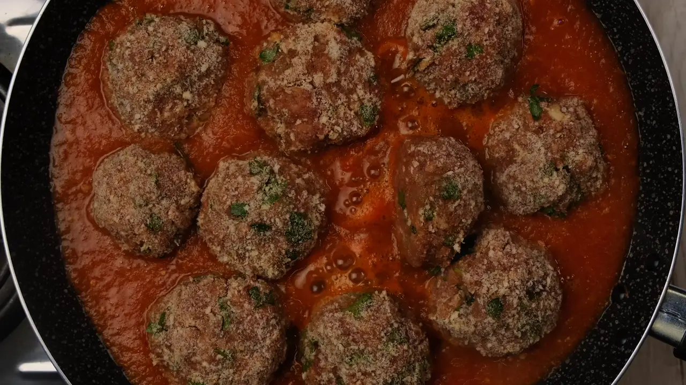

Вечеря за 20 хвилин. Щодня, цілий місяць
Гайд «Морозилка на місяць». Чотири вихідні готуєте по 5 заготовок — і морозилка повна. У будні лише дістаєте й розігріваєте.
- PDF на пошту одразу після оплати
- 20 рецептів і 4 списки покупок
- Для сім'ї з 3–4 людей
Що готуєте кожні вихідні
У морозилці
Вихідні 1. Тісто і фарш
Вареники, пельмені, голубці, фаршировані перці й тісто для піци. Ліпите один раз — вечері на тиждень уперед.
Вихідні 2. Котлети і млинці
Котлети й сирники заморожуються сирими і готуються одразу з морозилки — без розморожування.
Вихідні 3. Супи і соуси
Борщова заправка, бульйон і болоньєзе в пласких пакетах займають утричі менше місця і розморожуються за хвилини.
Вихідні 4. Маринади і запіканки
М'ясо маринується, поки розморожується. Лазанья йде в духовку прямо з морозилки.
Готово: ~70 порцій
Кожен пакет підписаний: що це, скільки і до коли з'їсти. Рецепти, списки покупок і правила заморозки — у гайді.
Що сьогодні на вечерю?
Оберіть пакет — і подивіться, скільки роботи лишилося на вечір.
Котлети
Заморожуються сирими і готуються одразу з морозилки, без розморожування. На сковороду — і все.
Один місяць у чотирьох числах
Усе, щоб заповнити морозилку за 4 вихідні
20 рецептів
Інгредієнти, приготування, як заморозити, скільки зберігати і як готувати з морозилки.
4 списки покупок
По одному на кожні вихідні, згруповані за відділами магазину. Кількості вже пораховані.
7 правил заморозки
Як охолоджувати, пакувати, підписувати і розморожувати, щоб нічого не зіпсувалося.
«Що в морозилці»
Таблиця на дверцята: що лежить і до коли з'їсти. Роздрукуйте і повісьте.
Гайд саме для вас, якщо ви…
Так, вам підходить
- Щовечора думаєте, що приготувати
- Працюєте і не маєте сил на плиту в будні
- Замовляєте доставку частіше, ніж хотілося б
- Маєте морозилку хоча б на дві шухляди
- Хочете, щоб удома завжди була нормальна їжа
- Любите план і готові списки
Мабуть, не підійде, якщо ви
- Не готові віддати готуванню один вихідний на тиждень
- Шукаєте рецепти для ресторанної подачі
Один вихідний на тиждень замість щоденної плити
Купуєте за списком
У гайді 4 готові списки: відкриваєте на телефоні в магазині й відмічаєте куплене.
Готуєте 5 заготовок
Одна тема на вихідні: тісто і фарш, котлети і млинці, супи і соуси, маринади і запіканки.
У будні — розігріваєте
Вареники в окріп, котлети на сковороду, соус до макаронів. 15–30 хвилин — і вечеря на столі.
Усе в одному PDF
299 грн
Це менше 5 грн за порцію. Один платіж — і все ваше:
- 20 рецептів заготовокз термінами зберігання і тим, як готувати з морозилки
- 4 списки покупокпо відділах магазину, кількості пораховані
- 7 правил заморозкищоб нічого не злипалось і не псувалось
- Таблиця «Що в морозилці»роздрукуйте і повісьте на дверцята
- PDF на 18 сторінокзручно з телефона і для друку на A4
Часті питання
Потрібен вакууматор?
Ні. Звичайні пакети з застібкою і контейнери підходять. Вакууматор лише краще захищає від сухих країв.
На скільки людей розраховано?
На сім'ю з 3–4 людей. Для двох беріть половину кількостей зі списку покупок.
Скільки місця треба в морозилці?
Для заготовок одних вихідних вистачає двох шухляд. Соуси й супи заморожуйте пласко — так вони займають утричі менше місця.
Одні вихідні — і тиждень вечерь уже в морозилці
Почніть з першого списку покупок у цю суботу.
Хочу гайд за 299 грн